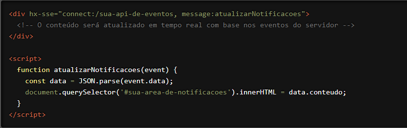

Estamos entusiasmados para apresentar a você uma funcionalidade poderosa do HTMX que permite um controle refinado sobre como eventos de servidor são manipulados e inseridos no DOM: o atributo `hx-sse`. Com `hx-sse`, você pode configurar seus elementos HTML para receber atualizações em tempo real diretamente do servidor, proporcionando uma experiência de usuário mais dinâmica e interativa. Vamos explorar como essa funcionalidade pode transformar suas interações web.
O que é o atributo `hx-sse`?
O `hx-sse` é um atributo do HTMX que define a configuração para receber eventos enviados
pelo servidor (Server-Sent Events). Ele permite que seus elementos HTML sejam atualizados
automaticamente quando o servidor envia novos dados, sem a necessidade de uma requisição
explícita do cliente. Isso é especialmente útil para aplicações que requerem atualizações em
tempo real, como notificações, feeds de atividades ou dashboards.
Como Funciona?
Vamos ver um exemplo prático para entender melhor como o `hx-sse` pode ser usado.
Suponha que você tenha uma área de notificações que deve ser atualizada sempre que novos
eventos são enviados pelo servidor:

Neste exemplo, o elemento `<div>` está configurado para se conectar à API de eventos no endpoint `/sua-api-de-eventos`. Quando o servidor envia um evento, a função `atualizarNotificacoes` é chamada para atualizar a área de notificações com o novo conteúdo.